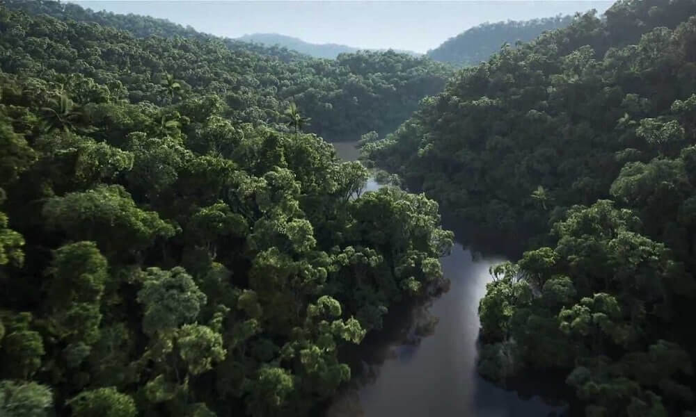
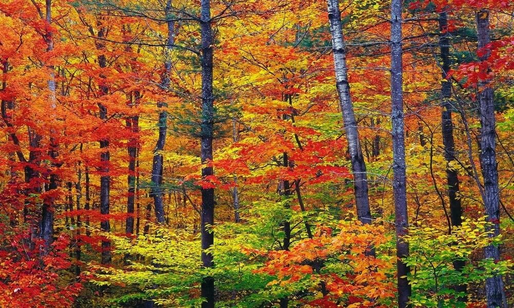
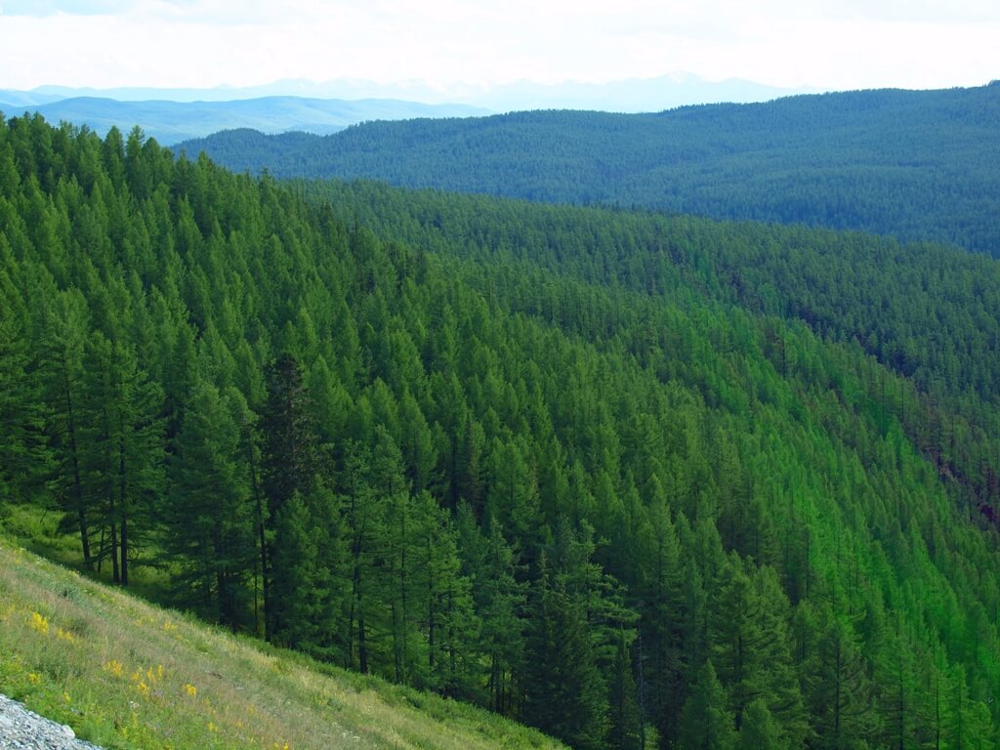
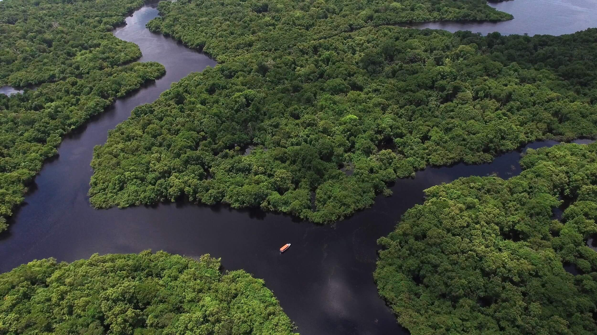
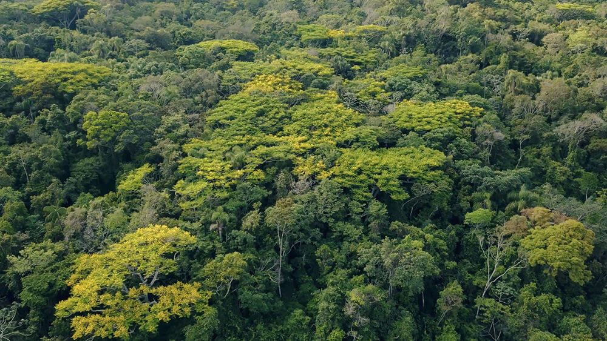
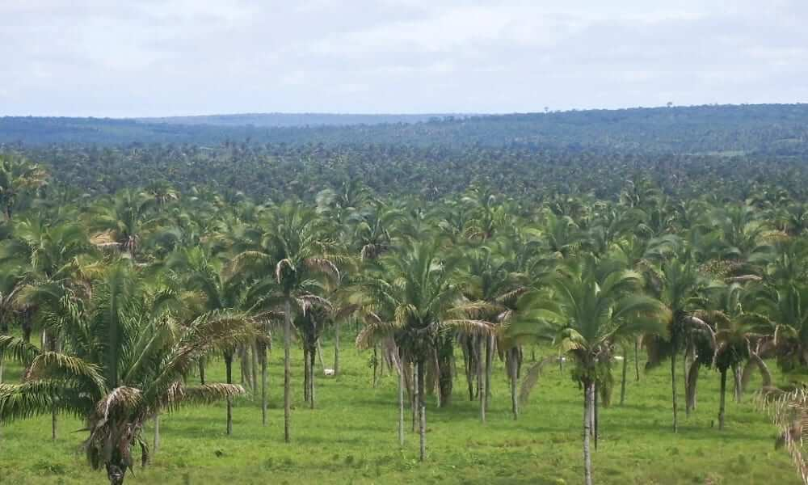
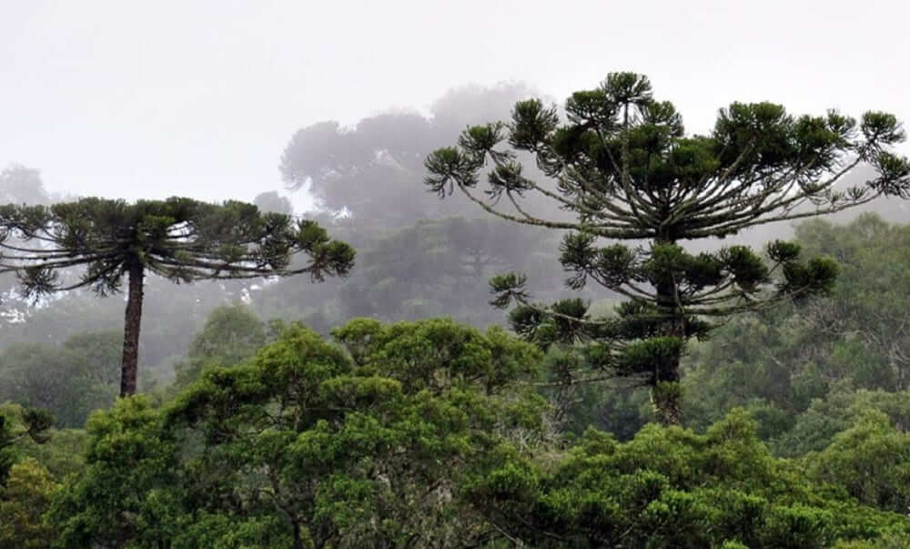

Forests are vegetation ecosystems formed predominantly by woody plant species, such as trees. These plants form a complex system of environmental relationships marked by the presence of a canopy. Forests generally occupy vast tracts of land and have important particularities in terms of geographic distribution and climate characterization.
Types
Details
The process of formation of a forest occurs through the natural growth of vegetation until reaching the formation of a canopy, in a way uniform, marked by the presence of species of woody plants. Commonly, the process of forest formation is classified through stages, which indicate the growth of plants in a given area.
The formation of a forest begins with the action of the so-called pioneer species, especially grasses and shrubs, which contribute to the enrichment of the soil and the increase of organic matter. Subsequently, such plant formation acquires greater stature and density through the stage of formation of a forest.
Photos

Tropical forest

Temperate forest

Boreal forest

Amazon forest

Atlantic forest

Coca forest

Araucaria forest
Biggest forests
Brazil
Canada
China
Russia
Eua